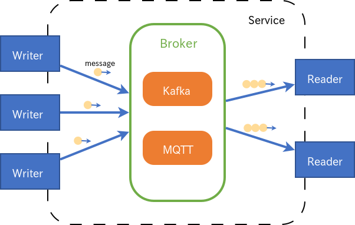

ドキュメント
リンク
- ユーザガイド
- SINETStream性能測定結果
- プラグイン開発ガイド
- SINETStreamサーバ構築手順
- コンフィグサーバー
- ブリッジ
- 更新履歴
メッセージングシステムの概念
SINETStreamは トピックベースのPublish/Subscribeモデル のメッセージングシステムである。 Brokerを実現するバックエンドのメッセージングシステムとしてKafkaまたはMQTTを利用している。
SINETStreamではPublisherをWriterと呼び、SubscriberをReaderと呼ぶ。

Brokerの構成情報やBrokerとの通信パラメータをまとめたものをSINETStreamではサービスと呼ぶ。 WriterやReaderはサービスを指定するだけでブローカーに接続してメッセージの送受信ができる。
トピックとはブローカーにおける論理的なチャンネルであり、 Writer/Readerはトピックを指定してメッセージの送受信を行うことで異なる種類のメッセージ配信を1つのブローカー上で行える。
ファイル構成
- README.md
- このファイル
- python/
- README.md
- Python版SINETStreamのビルド手順
- src/
- Python版SINETStreamの共通部分
- plugins/
- broker/
- kafka/
- Python版SINETStreamのKafka固有部分
- mqtt/
- Python版SINETStreamのMQTT固有部分
- s3/
- Python版SINETStreamのS3固有部分
- kafka/
- value_type/
- image/
- 画像メッセージのサポート
- image/
- compression/
- lz4/
- LZ4圧縮のサンプル実装
- lz4/
- broker/
- sample/
- サンプルプログラム
- README.md
- java/
- README.md
- Java版SINETStreamのビルド手順
- api/
- Java版SINETStreamの共通部分
- plugin-kafka/
- Java版SINETStreamのKafka固有部分
- plugin-mqtt/
- Java版SINETStreamのMQTT固有部分
- plugin-s3/
- Java版SINETStreamのs3固有部分
- plugin-type-image/
- 画像メッセージのサポート
- plugin-comp-lz4/
- LZ4圧縮のサンプル実装
- sample/
- サンプルプログラム
- README.md
- docs/
- userguide/
- tutorial/
- developer_guide/
動作環境
Python/Java版
Python/Java版のSINETStream APIは、以下のプログラム言語で実装される。
- Python 3.8以降
- Java 11
Python/Java版のSINETStream APIは、以下のメッセージングシステムに対応する。
- Apache Kafka 2.2.1
- MQTT v3.1, v3.1.1, v5.0
- Eclipse Mosquitto v1.6.2
- S3
- AWS S3
- MinIO
Python/Java版のSINETStream APIが対応するOS条件は以下の通り。
- CentOS 7
- Ubuntu 20.04 LTS
- Windows 10
Android版
Android版のSINETStream APIは、以下のプログラム言語で実装される。
- Java 11
- Kotlin 1.7.10
Android版のSINETStream APIは、以下のメッセージングシステムに対応する。
- MQTT v3.1, v3.1.1
注意
Eclipse Paho Android ClientプロジェクトのGitHubリポジトリeclipse/paho.mqtt.android は何年も放置状態となっている。 Android 12で導入されたシステム挙動変更 の影響により、Android 12以降の環境でPahoのライブラリを使うと実行時エラーが発生する。 有志が上記GitHubに修正パッチを投稿しているが一向に反映されないため、SINETStreamプロジェクトで独自に改修した版PahoMqttAndroid-bugfixを使うことにする。
Android版のSINETStream APIが対応するOS条件は以下の通り。
- Android 8.0 (API level 26) 以降
この制約条件は
SINETStreamメッセージの「シリアライザ／デシリアライザ」 機能で用いるApache Avroライブラリの実装上の都合に依るものである。
準備
Python/Java版
SINETStreamでは、Brokerを実現するバックエンドのメッセージングシステムとしてKafkaまたはMQTTを利用している。 そのため、SINETStreamとともに、これらのメッセージングシステムのどちらかをインストールする必要がある。 チュートリアルパッケージでは、Dockerコンテナを利用して必要なソフトウェア一式（SINETStream, Kafka, MQTT）をインストールする方法を用意している。
- Kafkaブローカーの設定
- MQTTブローカーの設定
- SINETStreamのインストール
- Python:
pip3 install --user sinetstream-kafka sinetstream-mqtt - Java: Java版READMEを参照
- Python:
Dockerコンテナをつかった クイックスタートガイド (Python/Java版) も参考のこと。
Android版
Android版のSINETStream APIは、メッセージングシステムのうちMQTTのみに対応し、
クライアント機能（Writer、Reader）を提供する。
このため、Android版のSINETStreamクライアントと対向するバックエンド側のBrokerはMQTT一択となる。
上記Python/Java版の記述内容に沿って導入したバックエンドに関して、
MQTTブローカー部分をAndroid対向用に流用することで構わない。
Dockerコンテナをつかった クイックスタートガイド (Android版) も参考のこと。